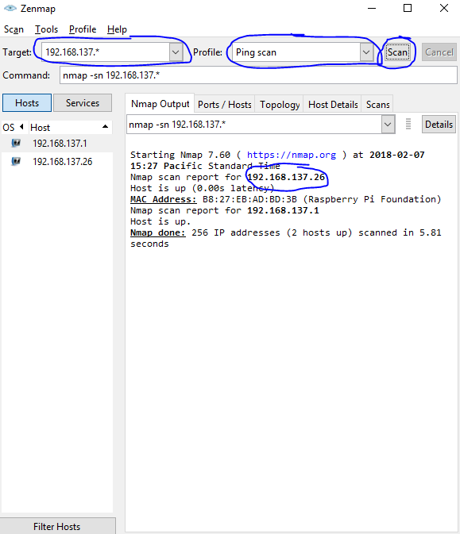

I wrote this guide for Professor Benson's System Foundations class at the University of San Francisco. Part of the reason is because it would be more efficient if everyone just got these instructions and followed them, rather than if I were to scurry around like a rat and be the personal IT for all the Windows folks. From this pointer forward, I will not personally provide any more assistance or support. I have the expectation that you know how to read and follow a guide.
If you tried to read this guide and still cannot comprehend the message that I am trying to convey, then I recommend going to this site to help solve your problems.
To waste the least amount of time on trivial matters, I will assume you have the following:
If you lack any of these, acquire them before continuing on this guide. Also, it is entirely possible that this method may not even work for you.
Creating an ssh file in the SD card's boot partition tells the Raspbian on bootup to start up a one-time SSH server. We will take advantage of this to SSH in there and permanently enable the SSH server.
In order to create the "ssh" file, you must have "Hide extensions for known file types" disabled. If you do not, you will not be able to remove the extension to the "ssh" file.
To change these settings, search for "Show hidden files and folders" using Window's search feature and change the setting so that they match the circled area in the screenshot below.
Next, power off your Pi if you haven't already and insert your SD card into your computer. Go to the boot partition of the SD card and add a text file. Name it "ssh" and remove the ".txt" extension. The file will be empty.
Excellent. Now put this back into your Pi, but do not turn the Pi on yet.
Right click on the the internet connection icon on the lower right corner. Select the bottom-most option.
Next, select "Change adapter options." If you are running Windows 7, this option will be located to the left.
Listed in this window are your network adapters. You will need to know which Ethernet port the Raspberry Pi is connected to and which adapter connects to the Internet.
Right click on the adpater that connects to the Internet and click on properties. In properties, click on the "Sharing" tab. Check "Allow other network users to connect through this computer's Internet connection" and select the Ethernet adapter that connects to the Pi.
By default, Windows will assign the IP address of the Pi to some value in the 192.168.137.* range. This number might be different, so we can verify the IP address range by right clicking on the adapter that connects to the Pi and clicking on properties. Next, select "Internet Protocol Version 4 (TCP/IPv4)" and select "Properties." If the IP address is something other than 192.168.137.1, then write down those numbers. We will be using it later.
To connect, you will need to be able to locate your Pi's IP address. The tool to do this is Nmap. You will need to download the file here and install it. A mirror download link is here, in case the original website goes down.
Next, you will need a client that can use SSH to access your Pi. Various methods include PuTTY, Git for Windows, Cygwin, and MSYS2. PuTTY provides a GUI for remote access and can be used for other purposes aside from SSH, while the others are command line tools. This guide will utilize PuTTY, but you are free to use the other programs listed. I won't provide support for you if you don't know what you are doing with them though.
Now that all the preresequites have been acquired, power on your Pi. Open up ZenMap (the Nmap GUI) and recall the IP assigned to the Ethernet port connecting to your Pi. Set "Target" to the IP address, but for the last number, change it to and asterisk/star character. Then, change "Profile" to "Ping scan." Afterward, click "Scan." This process should not take more than 30 seconds. If it does, cancel it and start up a new scan. When the scan is complete, the IP address of your Pi will be printed out.
Open up PuTTY. Copy the IP from ZenMap and paste it into "Host Name (or IP address)." Make sure "Port" is 22 and "Connection type" to SSH. Click "Open" and you should now be connected to your Pi.
After logging into your Pi, you will want the SSH server to be permanently enabled. Type "sudo raspi-config" to open up the configuration editor. Select "Interfacing Options" and then select "SSH" using the arrow keys. Once you have confirmed that SSH is enabled, press TAB twice and press enter to finish configuration.

Congratulations! You have now enabled SSH on your Pi. If you ever shut down your computer and boot it back up, your Pi will most likely not have the same IP address. Simply go through step 4 to retreive the IP and reconnect to your Pi.